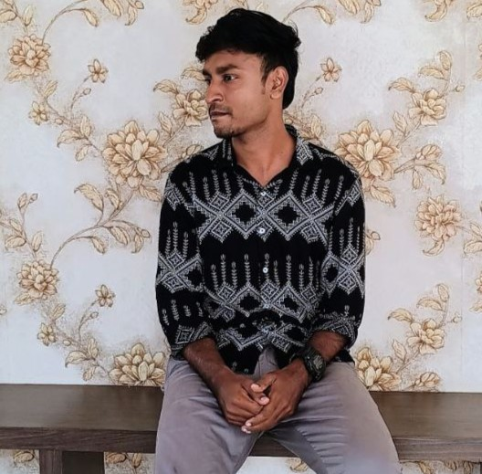

From Trivandrum, Kerala
16-06-1999
Kerala University
6282625332
INTRO
To secure an entry-level position as a WEB developer in a progressive
organization where leveraging knowledge of PHP programming, web
development skills, and enthusiasm for learning new technologies is
key. The goal is to contribute effectively to projects, collaborate
with team members, and advance in the software development career
path.
CERTIFICATION
Web development
[2/2/2024 - 31/5/2024]
Windsoft Institute
Project RAILWAY BAZAR
[2018 - 2019]
Trinity Software Technologies
Skills
- HTML
- CSS
- JavaScript
- PHP
- Bootstrap
- MySQL
- Git
PROJECTS
Website for College
2024
Front-end Developer
Developed a fully responsive and dynamic website for a university
to showcase courses, events, and faculty information.
-
Utilized HTML, CSS, and JavaScript for front-end development.
-
Ensured cross-browser compatibility and mobile responsiveness.
Portfolio Website
2024
Front-end Developer
Built a personal portfolio website to highlight web development
skills and projects.
-
Designed a clean and professional interface with HTML and CSS.
- Used Git for version control and project management.